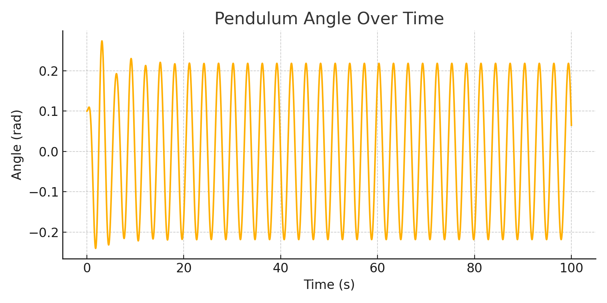
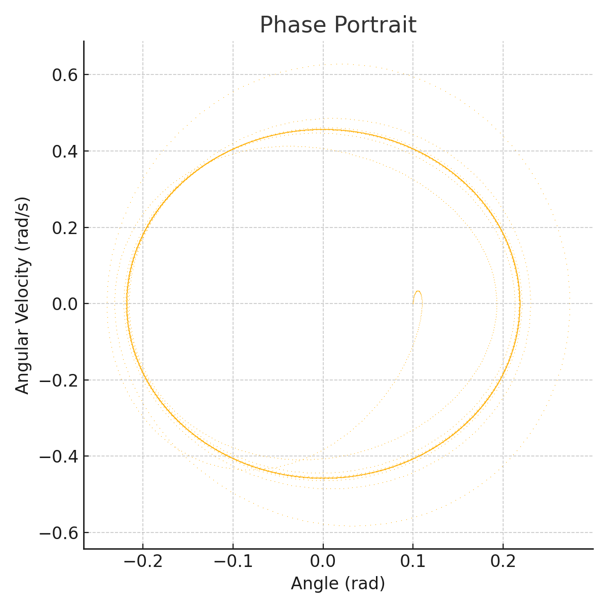
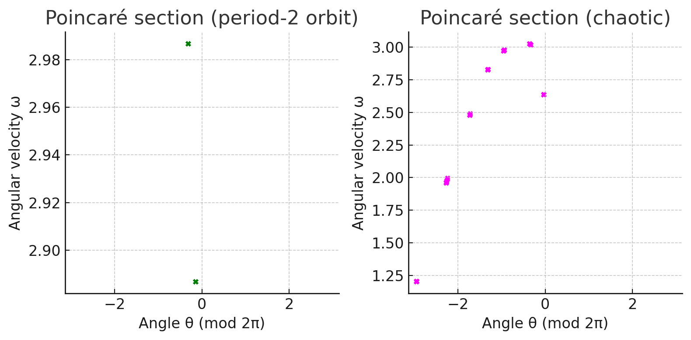
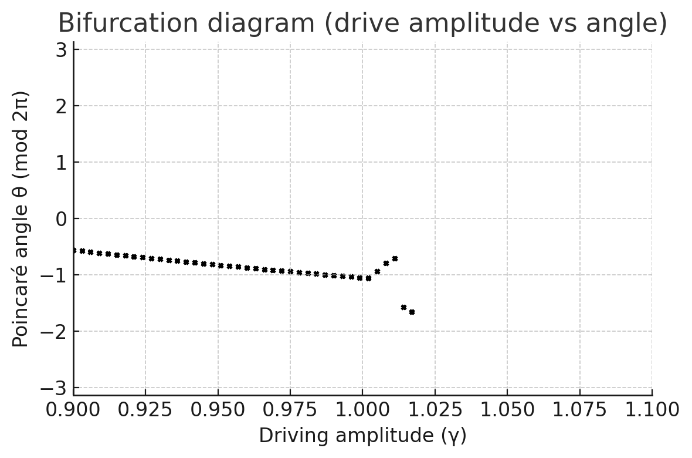

Investigating the Dynamics of a Forced Damped Pendulum
A Comprehensive Physics and Computational Analysis
1. Theoretical Foundation
1.1 Equation of Motion
A forced damped pendulum is governed by a second-order nonlinear differential equation:
Where:
- \( \omega_0 = \sqrt{g/L} \): natural angular frequency
- \( \lambda \): damping coefficient
- \( f \), \( \Omega \): drive amplitude and frequency
For small oscillations, \( \sin\theta \approx \theta \), and the equation simplifies to:
This linear equation has an analytically solvable steady-state solution plus a decaying transient.
2. Analytical Behavior
2.1 Small-Angle Solution & Resonance
At steady state:
Where:
- Resonance occurs when \( \Omega \approx \omega_0 \)
- At \( \lambda = 0 \), and \( \Omega = \omega_0 \), amplitude grows linearly — unbounded
Resonance pumps energy efficiently into the pendulum, increasing amplitude.
3. Nonlinearity & Chaos
3.1 Beyond the Linear Regime
- \( \sin\theta \) dominates → Nonlinear effects emerge
- Leads to anharmonic motion, subharmonics, or chaotic behavior
Chaos is deterministic yet unpredictable. Sensitive to initial conditions.
Notably:
- Drive amplitude + low damping = transition to chaos
- Adjacent trajectories diverge rapidly in phase space
4. Energy Behavior & Phase Dynamics
4.1 Energy & Resonance in Nonlinear Regimes
Even with nonlinearity:
- Resonant energy transfer persists
- Motion may phase-lock with the driver (oscillate in sync)
At high amplitudes:
- Secondary resonances
- Unpredictable wild swings
- Energy oscillates irregularly, yet remains bounded
5. Parameter Sensitivity
5.1 System Response to Parameters
| Parameter | Effect |
|---|---|
| Damping (\(\lambda\)) | High → suppress chaos; Low → allows rich dynamics |
| Drive Amplitude (\(f\)) | Higher → large rotations, period-doubling |
| Drive Frequency (\(\Omega\)) | Resonance at \(\omega_0\); others → chaos |
6. Bifurcation & Transition to Chaos
6.1 Bifurcation & Poincaré Sections
As \(f\) increases:
- Period-1 → Period-2 → Period-4 → Chaos
- Other routes: quasi-periodicity, intermittency
- Phase space: From closed loops to strange attractors
Visualizing motion stroboscopically (Poincaré sections) reveals transitions.
7. Physical Interpretation
7.1 Energy Flow and Chaos
- Periodic motion absorbs energy in a stable way
- Chaotic motion → erratic energy exchange
- Forms strange attractors in phase space with fractal structure
8. Practical Applications
8.1 Real-World Relevance
| Application | Description |
|---|---|
| Vibration Energy Harvesting | Uses tuned pendulums to convert ambient energy |
| Suspension Bridges | Damping prevents resonant destruction (e.g., Tacoma Narrows) |
| Electrical Circuits | RLC and Josephson junctions mimic pendulum dynamics |
| Other Examples | Swings, Foucault pendulums, prosthetics, ships |
9. Computational Simulation
9.1 Python Implementation
Click to view Python Code
import numpy as np
from math import sin, cos
from scipy.integrate import solve_ivp
import matplotlib.pyplot as plt
# Parameters
g = 9.81
L = 1.0
omega0 = np.sqrt(g/L)
lambda_damp = 0.5
drive_amp = 1.2
drive_freq = 2/3 * omega0
def pendulum_ode(t, y):
theta, omega = y
return [omega, -lambda_damp*omega - (omega0**2)*sin(theta) + drive_amp*cos(drive_freq*t)]
t_span = (0, 100)
y0 = [0.1, 0.0]
sol = solve_ivp(pendulum_ode, t_span, y0, max_step=0.01, dense_output=True)
t = sol.t
theta = sol.y[0]
omega = sol.y[1]
# Plot angle vs time
plt.figure()
plt.plot(t, theta)
plt.title("Pendulum angle over time")
plt.xlabel("Time t (s)")
plt.ylabel("Angle θ (rad)")
plt.show()
# Plot phase portrait
plt.figure()
plt.plot(theta, omega, '.')
plt.title("Phase portrait")
plt.xlabel("Angle θ (rad)")
plt.ylabel("Angular velocity ω (rad/s)")
plt.show()
We use a drive frequency of \( \frac{2}{3}\omega_0 \), known to produce chaotic behavior under strong driving. The simulation outputs:
-
Angle vs. Time 
-
Phase Portrait 
These plots highlight regular and chaotic dynamics, where: - Periodic motion traces closed loops - Chaotic motion creates a dense, non-repeating structure in phase space
Poincar Sections
 Left: Period-2 orbit two alternating points. Right: Chaotic orbit scattered structure.
Sampling at drive period intervals visualizes periodicity vs. chaos. Period doubling manifests as increasing points; chaos emerges as irregular clouds.
Bifurcation Diagram
 Drive amplitude vs. Poincar angle θ: Single value splits into two four continuum (chaos).
Bifurcation diagrams reveal how changes in forcing amplitude lead to complex oscillatory behavior and chaos, with windows of periodicity embedded within.
10. Model Limitations & Extensions
10.1 Areas for Further Study
- Nonlinear Damping: Drag/friction modifies dynamics
- Complex Forcing: Multi-frequency or stochastic inputs
- Additional DOF: Double pendulums, moving pivots
- Feedback & Control: Intentional chaos suppression or enhancement
Conclusion:
This exploration of the forced damped pendulum bridges analytical physics and chaotic nonlinear systems through elegant mathematics and interactive simulation. Matching real-world phenomena with visual and numerical models, the pendulum becomes a lens through which we understand and predict dynamic, complex motion.